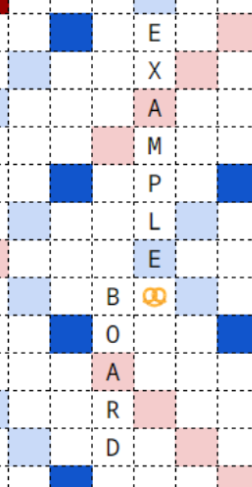

writing ECPH [10-19-2024]
i was an author + web dev for ECPH which was a fun time. here's an overview of the shit i did:- load testing, making sure the site worked
- writing lexico, music of the spheres, THE BEAST, a few others.
- storywriting and characterization.
overall feelings
man it feels weird having people try something you've made. i don't think i'll ever understand the feeling, nor be able to put it into writing. i think about how i've basically affected more people than i ever will through a silly little puzzlehunt and it freaks me out a bit. it freaks me out i've had a genuine impact on a few hundred people across the world, even if that impact only lasts for the better part of a week. it's just not something i've ever done before - i'm not used to putting creative work out in the open for people to pore over, and i'm especially not used to such a wide audience.but these feelings, no matter how nebulous, are always positive in the end - i may not know exactly how i feel about so many people having such nice words about BEAST or Spheres or complimenting the characters i helped write, but i know that at the end of the day it makes me feel good! it makes me feel fulfilled.
i'm glad people liked the parts i contributed to, glad people were able to smile for a little while. it's so motivating to hear! reading the kind words people have said about the hunt makes me happy, but above all else it really lights the firecracker in my heart to get out there more and keep working and putting out stuff for others. it's fulfilling in a way i don't think i can compare to anything else in my life. so overall, if you tried the hunt, if you had a good time, thank you! i'll keep trying my best from here on out.
puzzle writing
i'll mainly talk about THE BEAST, Music of the Spheres and The Lexicographer here. let's start with lex:The Lexicographer
i fucking love Bookworm Adventures. this was the first puzzle i wrote for the hunt, it's pretty simple and barely a puzzle but i just really wanted an excuse to share Bookworm Adventures with the world, one of my favorite games of all time, a long-overlooked entry in PopCap's catalogue. the title's a reference to "Lex", the main character.writing this puzzle introduced me to the fun world of "Preventing Cheating at Video Games". the reason there's an alert not to look at the source code is because while there aren't secrets that are just stored in the frontend or anything, there are vulnerable routes in the API that any misintentioned solver can use to leak a bunch of information.
we identified these loopholes like two months before the hunt, and we figured it just wasn't worth the effort to try and fix them. but as someone whose background is in cybersecurity (i don't have a job or anything i'm just a piece of shit student) it was pretty cool to see something i could feasibly be exploiting in a HackTheBox machine show up in a production site i was working on.
when we held an internal guessing game, a few people guessed that this was going to be the puzzle with the highest 'Fun' rating - it's not. but i think it's a fun reprieve from some of the grindier, headier puzzles in Great Hall, and i'm very happy about how it turned out. wouldn't do it any different if i were doing it today. maybe i'd make the design prettier.
this puzzle broke a lot for our foreign teams over in china / korea, and i still have no idea as to why. it sucked because there was literally no way to troubleshoot or do anything about it, none of us cringe westerners could ever replicate what was going wrong. whenever someone emailed in about it i kind of just had to shrug my shoulders and do the whole customer-service Sorry I Can't Help You Deal, which i didn't like doing. if anyone could figure out why this was happening, maybe let me know...
Music of the Spheres
this puzzle went through a few internal iterations but once i settled on hiphop it kind of made itself. i had a lot of fun creating the data + programs that would automatically parse my raw information into a d3.js graph, and also this was my first time working with d3.js which has the physics stuff baked in for me. it's sooooo pretty, my god, i love watching it swirl and spin. hoooly.a few people named this as their favorite puzzle of the hunt, which comes as a huge surprise. when i wrote this i kind of figured people would solve it in 30 minutes and forget about it, the puzzlehunt equivalent of a flyover state. i did not expect anyone to really think about this puzzle after the hunt, so the fact that it made a lasting impression is (a very pleasant) surprise! i'm glad people liked it.
for what it's worth i think just researching and finding the data was enjoyable for people, especially if you know a thing or two about this genre of music. the dataset is a very fertile, untouched land and i'm simultaneously surprised that no puzzlehunter has ever really utilized it, and not surprised at all given the average demographic of a puzzlehunt (no offense but let's be real here guys). i think it helps that the extraction / process is super straightforward. you're not gonna get stuck on this puzzle, really. there's always something to look at, something to do. as i'm writing this it has still not been hinted by any team - let's see if that continues.
my favorite album in this is Blonde.
THE BEAST
yeah okay.this puzzle people seemed to like, which i'm glad. at this stage in my life i have no words about THE BEAST, really. no words about writing it. i seem to have repressed all of the experiences i had writing this, maybe because my brain is trying to protect me from the horrors or something. so here is a brief little document i wrote in July, when i was neck-deep in the construction on this fucking thing. enjoy.
THE BEAST AND ITS MANY WOES
i like to think i'm pretty experienced with making puzzles, specifically word puzzles - i'm drawn to them and often write them out of nothing but love for the game. as such i've familiarized myself with a lot of common tools that help with setting word puzzles, and again, i like to think i'm decently comfortable with these tools. you know them - your qats, your nutri, some deeper ones such as qxw / zyzzyva. even then, when those tools fail to find words that fit a certain constraint, i can cook up a script or something that'll find those words for me. all in all, i think of myself as a ""Competent Word-Puzzle Setter"".that being said, holy fucking shit this was a nightmare.
i have created entire minihunts that took less effort than helping create the boards for this. i leveraged basically everything at my arsenal. i used up so much brain power and so much time just trying to get these constraints to work. i only did it because i truly believed this concept was going to be an enjoyable solve, i would not have done half this shit otherwise. good lord.
this puzzle went through a few boring iterations (mind you, the boards in those iterations still took about two hours each to make, i made around 4 and they're all lost to the ether now, wasting even more of my time) before we finally settled on this "action-tile" business. at first i was really excited about the idea (still am) because there's a lot of interesting stuff you can do. and thinking of interesting stuff you can do is quite easy, all things considered - that was obviously not the roadblock. the roadblock is actually making it to work within the constraints.
and the constraints, good grief they are constraining. sometimes it feels like writing a puzzle is conquering a beast of your own creation. it is some evil sphinx with rules and riddles compounding atop one another, and you need to find just some solution that bypasses all its evil machinations. there are multiple times i've developed something i thought was really cool, only to be shot down by some caveat, some hidden little trick or interaction that completely ruins the entire thing. often it will be that there is simply no possible word that can fill the space i need it to fill, sometimes it will be restrictions within the 15x15 grid (surprisingly, not a lot of space!), sometimes it will be some specification to the action-tiles that undoes the whole thing.
but the biggest constraint, the most self-imposed of them all, is some lofty, platonic ideal of "elegance" that i strived to reach towards. and 'elegance' is difficult to quantify so i set aside a few rules for myself, which i thought (like a fucking idiot) would be reasonable to fulfill.
- if an action tile happens to be adjacent to some tile, it should perform its action on the tile. if it doesn't, it shouldn't be touching the tile at all.

here the pretzel is touching the B, but nothing is being done to the B. i considered this something to be avoided, and i stand by this judgment, but this also has the side-effect of practically making every action-tile a minefield wherein you cannot place any other tile within a 1-tile radius of it. which is a subtle effect, but extremely annoying! (one of the boards ends up compromising on this purely because there was just no other way to make it work the way i wanted).
- if a word is involved in the play, it should be a common word that people would know. this was another ordeal, because what i consider a common word is unfortunately not what most people consider common words! so i will look at my various tools, see COATI can fit, think to myself, hmm, yes! people know what a coati is, right? and further on top of that, the two-letter words that are very useful to set a puzzle like this are all hilariously uncommon and strange - especially in CSW19, what the hell is an NY? - so i will set the board, find that some of the two-letter words made are really quite weird, and i just give up and try to set it again. or alternatively, i just bite the bullet and keep it unchanged, because i've already spent 2 hours on one board and i don't want to spend more time.
- score constraints! usually wouldn't be an issue, but there are a lot of potential ambiguities that arise with how the tiles interact. let's say, if the pineapple changes the position of a tile, placing it onto a double-letter score, which tile should be double-letter-scored? the tile that was originally on that position, or the new tile that gets swapped via pineapple? the answer is it is way too unclear to make a decision. and because we use scores to extract, leaving this ambiguity to the solver is a big no-no! this specific constraint literally killed an entire board idea.
another side effect of score constraints is that if i have something locked in on a specific spot in the board that meets the score constraint, i cannot ever move it from that position because the extra-score-tiles will be different, thus changing the score. so if i ever need more space, well, tough shit, bud!
this isn't even counting the fact that sometimes making a point score just as much as you need is difficult in and of itself - there are ways to do that, such as hooks / overlaps, but if you're making a hook then the un-hooked word needs to also be valid, and if you're making an overlap there are certain tiles that just do not have an appropriate two-letter word (looking at you, V).
- boards should all be connected, there should be no 'islands' of tiles that are disjoint from everything else. when you have some weirder stuff like popcorn that relies on line of sight, this is a goddamn nightmare. narutomaki is also fucked up for this, because of the way it shifts the tiles on the board. there will often be straggler action tiles that you just can't find a nice way to connect to (note also, action-tile adjacency rules, which make this even more of a nightmare).
- every board state should be "valid" - this includes the board given, the board after promotion, the board after playing your word, and the promoted board after playing your word. this is, well, obvious, but when you have a thousand different action tiles that don't reflect what they do on the board itself it's so easy to forget an action here or there and result in an invalid board. it is almost like playing 5d chess with time travel, the way that all these boards affect one another.
there are at least like 5 more rules that i haven't listed here. it is a big, terrible mess. it is the monster of my own creation, so much so i actually started referring to it as "the Beast". whenever i posted a board and had it sent back because testsolvers identified something wrong with it, i considered it another innocent life the Beast had taken. i wrestled with the Beast, fought it tooth and nail, attempted to answer and satisfy its every insane whim and need. the Beast has hands. even worse is getting a poor innocent writer on board and subjecting them to the Beast in the same way i have subjected myself to it. it felt merciless.
you may have noticed that in that excerpt i make some references to it being 'a beast of my own creation'. this is because back when i was writing it, it was just called 'Armoury Ghost', but i complained about writing it so often (a bitch loves to complain) that the name stuck. that's where the entire concept for THE BEAST's character comes from, btw - this puzzle being such a fucking effort to make was the launching point for her character.
a few of us (correctly) predicted this was going to be marked as the hardest puzzle in the hunt, and it's interesting to me because the type of difficulty present in THE BEAST is pretty different from what you would see in a puzzle typically rated the hardest in a hunt (at least i feel like this is the case). i don't think any individual step is hard, maybe a few of the emojis are difficult to get (champagne gave a lot of people trouble).
i guess if i had to describe where the difficulty comes from it's like two phases - the first phase is figuring out the emoji, which is doable but there's a lot of them, and then there's actually solving the boards, which is doable but there's a lot of them. i think a lot of the steps in isolation are reasonable, but the way THE BEAST is written it's practically a sequence of one hundred steps you need to make and the sheer effort in doing so adds to a lot of difficulty.
a similar puzzle (to me) is deconstructed crossword abcdefgh where it's immediately clear from the outset what you need to do but doing it for an entire grid is so fucking hard and there's a thousand cells to fill in and it's all aaaaah what the fuck. i also like deconstructed crossword a lot because there's that sense of 'damn this is even possible to make? how is it even possible that this was made?' which is always a great feeling to evoke in a solver. man, shoutout deconstructed crossword. no one talks about that puzzle anymore but man, what a great puzzle. can we all take a moment to appreciate deconstructed crossword abcdefgh?
puzzles not by me i thought were really good
whenever i talked to people about hunt / specific puzzles i often found myself saying 'wow, [X] is one of my favorite puzzles of the hunt'. i said this for maybe at least 8 puzzles out of the 45, and i meant it for all of them. i think my other authors did some insano fucking nutso work and it should be appreciated, so here's a list no particular order:- WTF. WTF indeed. this is the coolest fucking thing ever man. it never got old to respond to hint requests with 'time to look at that font file 🧐'.
- Object Impermanence. man i just love this final step. it's so smart. it's so satisfying to do as well. a lot of pieces have to fit together for this to even be possible and it's so, so good.
- Follow the Leader, Patchwork. grouping these in together because i feel like they're just really good r1 puzzles, very simple and elegant.
- Armoury Meta. utter fucking mindbender, still don't know how this fully works, don't think i could have ever solved it on my own but it's one of those things i like gazing at from afar and admiring.
- Tower Navigation. in a lot of ways i feel like this is the perfect culmination of the navs, the last sick and twisted gimmick to throw at solvers. it also presented a lot of implementation headaches, the funniest one being that tiles would often be rotated the wrong way because it was impossible to reconcile the way we handled rotations in the navigation tool and the fact that rotating 5x in the Tower should result in your original rotation. the way we fixed this was making the floor tile rotationally symmetric so it didn't matter.
- Duality. this puzzle took me 6 months to testsolve because i gave it a good honest try for about 3 days, stopped, forgot about it for that long, then picked it back up again and finished my testsolve. i am so fucking lazy to do printer puzzles typically so being forced to do one through testsolving really made me see the light.
- Trelawney. similar reasoning to above: i typically am way too lazy to try these puzzles but i gave it an honest go with a teammate and i just had such a great time.
- On Site Only - Sorry! ridiculous. so fucking cool, so sick. this is so staggeringly different from what you'd expect from a puzzlehunt puzzle that it's kind of just refreshing - i mean i love a good crossword and i love a good Cryptic but puzzles typically tend to tread the same ground over and over (not that that's a bad thing) so it's so pleasant to me when you just see something so... different in the way that this was. i am glad we ended up including this puzzle.
writing ☄
i wanted to talk about this somewhere. i think the site-wide wrapup is not the correct place for a section this intensely personal, so i'm sequestering it off here. ☄ is, in all honesty, practically a self-insert (mom says it's my turn to self-insert into the hunt!!!) and i had a lot of internal considerations as to how to handle ☄. there are a few references to the specifics in the dialogue, but i wanted to set them out clearly here.there's an internal debate raging in my head as to how many personal details to include here, i don't want to divulge too much information about myself really. let's just say that ☄ is a character that is very closely modelled off of me when i was a little younger. when i was writing ☄ i had two priorities very high on my list - the first priority is that i should be honest and upfront about how being someone like ☄ is typically a very difficult, uncomfortable experience. i didn't want to sugarcoat it because i felt it would be dishonest to the people who relate to the character, and to me. growing up was a pretty shit time for me, and it is for so many other people like me, and above all else i wanted not to sweep that under the rug. whether or not i did a good job at that remains to be seen.
there were a few ways i tried to convey this: i wanted the emoji-speaking to loosely convey a sense of voice dysphoria, the whole shape-shifting entity thing being a stand-in for body dysphoria as a whole, and even their uncursed form (whether or not the hood of their hoodie should be up or down in the victory page was a genuine thought i had to consider). i wanted them to be shy, standoffish, very nervous about meeting people in real life due to their appearance, and i wanted them to kind of be afraid of you (the player character) when you first meet them.
that was my first priority. my second priority is, as the author, as the person who is practically God in this universe, i wanted to use my authorial powers to make sure that despite all these experiences that they were happy and comfortable in the end. i really didn't like the idea of subjecting ☄ to all this pain without granting them a solution in-universe, because there's already so many people in the real universe who don't have the privilege of being magicked into a body that they're comfortable with, and friends that accept them. i wanted to make sure that at the end of it all, ☄ ended up okay - that they were able to stick to their ghostly form, and that everyone around them in the team was nothing but accepting and kind towards them.
i have a lot of complicated thoughts about ☄, and a lot of their important characterization is tucked away in optional dialogue that people may or may not have gone back for (specifically, the other ghosts talking about them). but in the back of my mind when i was writing it, knowing other people would see and interact with ☄, i hoped that ☄ would reach their Intended Audience, i hoped the people who would relate to them would find them tucked all the way at the end of the Tower, and i hoped they would feel seen. i think in general, when it comes to trans representation, people often don't want to talk about how much being trans kind of sucks - like, why do we need any reminders when our entire life is already a reminder? but it's true, it's a real part of our lives that we deal with, and i wanted to acknowledge that while also simultaneously acknowledging that it can get better, that it doesn't suck forever, that eventually you can find yourself wearing that same old hoodie but this time you keep the hood down instead of up, that eventually you can find yourself surrounded by friends where you're comfortable enough to do that. that eventually, can find that you're comfortable enough with yourself to be able to do that.